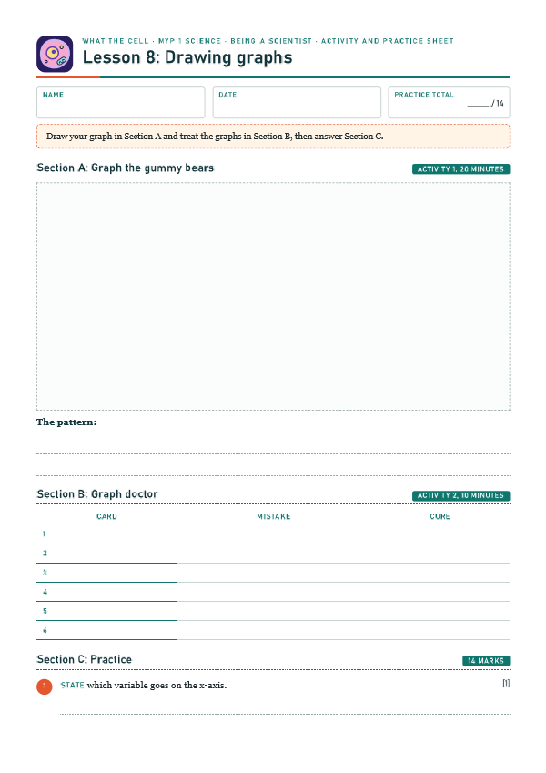

By the end of the lesson you can
- Choose between a bar chart and a line graph
- Draw a line graph with labelled axes, units and a scale
- Draw a line of best fit
- Identify anomalies on a graph
Keys: arrows or a presentation clicker move the slides, F for full screen. Slides with a red dot have a video or simulation.
Videos (all 5 minutes or less)
- 3:10
Skill builder, drawing line graphs
Oxford Junior Secondary Science. While you watch: Which variable goes on the x-axis? Slide 11.
Simulations
- Lab
- PhET
Print and practise

Activity and practice sheet
Used in the lesson’s activities, with practice questions. Your teacher has the answers.
Download (PDF)Lesson 8 slides
All 17 slides in one file, to read again or print. The video buttons on the slides open YouTube.
Download the slides (PDF)Revising? The Revision tab on the unit page has the unit notes and review.
Class activity pack
Everything to print for the lesson’s activities: picture cards, sorting mats, station cards with their kit lists, and the teacher’s set-up notes. Print it before class.
Download the activity pack (PDF)Notes: Drawing graphs
bar chart
Bars for categories that are words or groups. For example: favourite fruit, type of paper.
line graph
Points joined by a line for numbers that change smoothly. For example: temperature over time.
axis
The line along the side or bottom of a graph (two axes). For example: x-axis across, y-axis up.
scale
Numbers spaced evenly along an axis. For example: 0, 1, 2, 3, 4 cm.
line of best fit
A smooth line that follows the pattern of the points. For example: about as many points above as below.
pattern
The way one variable changes when the other changes. For example: more sugar, less growth.
Key words
| bar chart | bars for categories |
|---|---|
| line graph | points and a line for number data |
| axis | x-axis across, y-axis up |
| scale | evenly spaced numbers on an axis |
| line of best fit | a smooth line that follows the pattern |